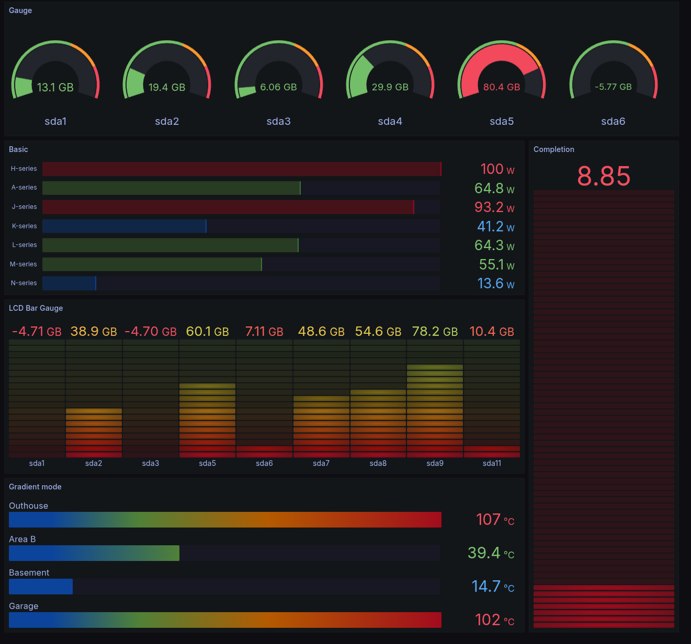
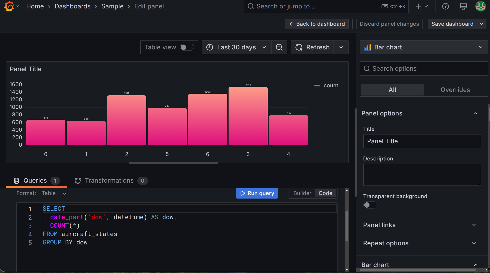

Dashboarding and PostGIS
Jed Rembold
April 9, 2025
Announcements
- Almost to the end!
- Last homework this week! And it is a short one!
- Are you behind it getting anything post HW6 turned in? Just get it in: no penalty if it is submitted before I go to grade it.
- Project
- Make absolutely sure your scraper is running
- Ensure your automated cleaning is running on a schedule
- Choose one partner where you will deploy the serving aspects of the
project
- Ensure that partner has set up the foreign data wrapper to connect to the other partner’s data (Lec 9)
- PostgREST API set up and sharing data that is at least somewhat a mix from both projects (Lec 10)
- Grafana dashboard set up and visualizing data to help answer or inform your question (tonight)
Dashboarding
Visualizations
- It is frequently desirable to have a visual interface through which to view or understand data summaries
- There are no shortage of dashboarding options out there:
- MS Power BI
- Tableau
- Shiny apps (R)
- Plotly, Dash (Python)
- Here, we will use an open-source tool that is a touch less common in this space, but extremely powerful: Grafana
Grafana
- Open-source, versatile platform for querying, visualizing, and alerting from various data sources
- Creates interactive and customizable dashboards
- Dashboards can be shared within teams or externally
- Data for dashboards queried directly from connected data sources

Installation
- As with many things, we can leverage Docker to help us install and run Grafana
- Process:
- Add the Grafana template on Railway. You want the one by Rèmi A. Deploy it.
- Generate a public domain so that you’ll be able to connect to the service
- Add a
GF_SERVER_ROOT_URLenvironment variable and set it tohttps://${{RAILWAY_PUBLIC_DOMAIN}} - Redeploy
- Access the public domain and log in with the user and password from the environment variables
User Setup
- Clearly the admin account is not the easiest to log in as (and that is a good thing!)
- Useful to make user or team accounts
- In the left menu, go to Administration
- Click “Users and Access”, and then “Users”
- Click “New User” and enter information.
- After creating, you will see an option about making that user a Admin. You might want to do that.
- Under Organizations, change the main organization permission to editor or admin
- Create users for each partner
- Sign out and sign back in as your newly created user
Data Sources
- Grafana needs to know what sources it can access to retrieve the data to visualize
- An admin account needs to set this up:
- In the left menu, go to Connections
- Search for Postgres and select it
- In the upper right click “Add new data source”
- Populate the necessary portions with the data to connect to your
Railway database
- Should be host, database name, user, and password
- Look back at your database environment variables as needed
- Under Additional Options, set the Postgres version to the latest possible
- Hit “Save and Test” at the bottom. If you get the positive pop-up dialog, you are good to go!
Creating a Dashboard
- Click on the Dashboard section in the left menu
- Click the giant “Create Dashboard” button, and then “Add Visualization”
- Select your Postgres data source
- Create your visual!
- You can then go back to the dashboard to create more visuals
- You can arrange and size visuals on the dashboard
- Make sure you save the dashboard!
Making a Visual
- Generally, you’ll spend your time in two areas making a visual:
- In the query builder at the bottom of the screen.
- Here you can either construct a query from the GUI, or, because you are all competent in SQL, from the query tool directly
- In the configuration menu to the right of the screen
- Here, you can choose both the type of visual, as well as all the customizable aspects of that visual
- In the query builder at the bottom of the screen.

Variables
- You may want to add a little interactivity to your dashboard!
- Maybe a dropdown, or a text field for filtering?
- You can define dashboard variables that you can then use in your SQL queries to make things dynamic
- While editing the dashboard (not a specific visual), go to Settings in the upper right
- Choose the variables tab and add a new variable
- Choose a type, give it a name, and fill in any other information
- In a visualization query editor, you can refer to that value with
'$variable_name'- Note that it needs to be in a string if it gives text values!
Sharing
- Dashboards are very often meant to be used by others! So how can we share them?
- Exit the edit mode for your chosen dashboard to see the “Sharing” button
- Externally
- Note that dashboards with variables will not run the necessary SQL when shared externally! So this only works if you didn’t use any variables.
- Click that you understand it will be public, and then copy the link and share it!
- Internally
- If you want to share a board with variables, someone will need to log into your Grafana instance
- Give them an account with purely viewing privileges
Break!
Break Time!

Geospatial Information
Positional Data
- Location information can be a fundamental aspect of stored data
- Currently, we could store such data, but Postgres has no intelligent methods of working with or analyzing that data
- We’ll focus today on how we can utilize Postgres’s PostGIS extension to unlock the power of location based data
- Don’t overlook the official PostGIS documentation, which can be a helpful resource to accompany these slides and the text
PostGIS
Unlike the
tablefuncextension,PostGISdoes not generally come with plain Postgres by default- On Windows and Mac however, if you installed Postgres as indicated at the start of the semester, you should already have it on your system
- If you are missing it in Windows, you can launch the Stack Builder and should be able to add the extension from there
The PostGIS extension will bring in a lot of extra functions and data types, so you might consider creating a new database to contain GIS type data (maybe
analysis_gis)Adding the extension to the database is the same as with other extensions:
CREATE EXTENSION postgis;
Geometries

Well-Known Text
- Most of the new geometries will be constructed by passing in a well-known text string (or WKT)
| Type | Format | Comments |
|---|---|---|
Point |
'POINT (-74.9 42.7)' |
No comma separating, and longitude comes first! |
LineString |
'LINESTRING (-74.9 42.7, -75.1 42.7)' |
Comma separates coordinate pairs |
Polygon |
'POLYGON((74 42, 75 42, 76 43, 74 42))' |
Double parentheses, initial point repeated to close |
MultiPoint |
'MULTIPOINT(75 42, 74 43)' |
Comma separates coordinate pairs |
MultiLineString |
'MULTILINESTRING((76 43, 77 43), (78 43, 77 43))' |
Parentheses group individual lines |
MultiPolygon |
'MULTIPOLYGON(((74 43, 75 44, 74 45, 74 43), (81 40, 81 39, 82 39, 81 40)))' |
Still double parentheses to start and end, with 3rd parentheses grouping polygons |
Coordinate Systems
- To be able to relate and compare locations to one another, a
consistent coordinate system needs to be used
- This covers everything from the mapping projection to whether or not you are working in curved space
- PostGIS (and most GIS applications) let you specify the coordinate system with a Spatial Reference System Identifier, or SRID
- Most commonly used for us will be the most recent World Geodetic
System: WGS 84
- This corresponds to an SRID of 4326
- If grabbing geospatial data from an online source, always check its coordinate system
- All coordinate system information stored in
spatial_ref_systable, so you can query to find SRIDs if necessary (though it is a bit clunky)
New Data Types
- While PostGIS introduces many new spatial geometries, only a few new data types are added to Postgres.
geography- Based on spherical curvature, all calculations take place on a globe
- More complicated math means fewer functions work, but distances are more precise, especially over large spans
- Results expressed in meters
geometry- Based on a flat map, where all calculations take place on a plane (the mathematical sort)
- Math is simpler, but distances are less precise if across large spans
- Results expressed in units dependent on chosen coordinate system
- Both types can hold all of the spatial geometries mentioned earlier
Creating Spatial Types
Two main methods of creating geography or geometry types:
ST_GeomFromText(WKT, SRID)creates a geometry object to hold the spatial object given by the WKT with the optional given SRID- If no SRID is given, it is assumed to be 0 (no SRID at all)
ST_GeogFromText(WKT, SRID)creates a geography object to hold the spatial object given by the WKT with the optional given SRID- If no SRID is given, WGS 84 (SRID 4326) is the assumed default
If you look at the output of one of these data types, it is not human-readable
SELECT ST_GeomFromText('POINT(-75 42)', 4326); >>> 0101000020E61000000000000000C052C00000000000004540 SELECT ST_GeogFromText('POINT(-75 42)'); >>> 0101000020E61000000000000000C052400000000000004540
Making Spatial Objects (Pt1)
- Using a WKT to create spatial objects can be clunky if you already have latitude and longitude values in your table as numbers
- PostGIS offers a number of constructor functions for various objects
that return geometry data types with no inherent SRID
ST_MakePoint(long, lat, [z,m])will create a geometric point with optional 3rd or 4th dimensions as wellST_MakeLine(point1, point2)will create a line from the first point to the second. There is an array option as well.ST_MakePolygon(geometry_linestring, [cutout_linestring])will create a geometric polygon using the provided linestring with optional cutouts
Making Spatial Objects (Pt2)
Since these all by default make
geometrytype objects with no SRID, it can be desirable to set or convert as neededCan have an SRID attached to them:
ST_SetSRID(|||object|||, |||SRID|||)will attach the given SRID metadata to the object
Can be converted:
|||object|||::geographywill convert to the new type (maintaining any attached SRID
A common pattern might then look something like:
SELECT ST_SetSRID(ST_MakePoint(|||long col|||,|||lat col|||), 4326);
Adding an Index
B-Trees are not well suited for indexing coordinate information
- Which would be “bigger”: (2,0) or (0,2)?
Instead, PostGIS recommends using the Generalized Search Tree (GiST) index type
CREATE INDEX |||index name||| ON |||table name||| USING GIST (|||column name|||);
Actual Analysis!
- Now that we’ve gone to all this effort to get the spatial data into a format that Postgres can understand, we can actually do some analysis!
- Two of the most common functions deal with distances:
ST_DWithin(|||point₁|||, |||point₂|||, |||distance|||)returns a True or False depending on whether the two points are within the given distance from one another- Remember that geography distances are in meters, whereas geometry distance units depend on the SRID
ST_Distance(|||point₁|||, |||point₂|||)computes the distance between the two points- This will be along a curve in geography, or the Euclidean distance in geometry
Your Turn!
- With your neighbors, import in the data here, which is a collection
of the small liberal art NW colleges along with their latitude and
longitudes. See if you can add a new column with the necessary data
type, add an index, populate the column with point type objects, and
then answer the following questions:
- What other schools are within 100km of Willamette?
- What two schools are the closest together? Which two are the furthest apart?
Complicated Shapes
Shapefiles
- Life would be very painstaking if you had to recreate complex polygons point by point
- Instead, more sources of spatial information that is more than a
single point distribute that information in what is commonly called a
shapefile
- Shapefiles are the data format developed for the ArcGIS platform
- Basically a zip which includes several files that contain the necessary information (.shp, .shx, and .dbf, at least)
- The shapefile contains all the same information as we want, concerning lines, polygons, points, etc, as well as extra explanatory or annotations
- The general plan is to import the shapefile information into its own table within our database
shp2pgsql
- PostGIS comes with a command line utility called
shp2pgsqlon all operating systems- Windows users can run a graphical version of the same program, but
it is not available on Mac and Linux
- If you want to run the graphical version, I’ll direct you to the book’s explanation, which is covered in depth
- Windows users can run a graphical version of the same program, but
it is not available on Mac and Linux
- Like many command line utilities,
shp2pgsqlutilizes several flags to control its behavior-I– sets up a GIST index on the geometry column-s– specifies a specific SRID-W– specifies a particular encoding if needed (sometimes necessary for location names)
shp2pgsql -I -s |||SRID||| -W |||encoding||| |||shapefile|||.SHP |||table_name|||
Bringing Into PGSQL
By itself,
shp2pgsqlwill just generate SQLIt can be more useful to pass that SQL directly into your database
In Bash, this can be done directly with the trusty
|operatorAll together then, the command would look like below (all on one line)
shp2pgsql -I -s |||SRID||| -W |||encoding||| |||shapefile|||.SHP |||table_name||| | pgsql -d |||database||| -U postgres
Back to Text
Since the shapefile spatial information will be encoded directly to a geometry type, it can be tricky to know what exactly you are working with at times
You can call the
ST_AsText()function on any geometry (or geography) object to output its WKT representationSELECT ST_AsText(|||geom|||) FROM |||table name||| LIMIT 1;- This can also be useful if you need to get it into a text form to copy into another location
Visualization
In general, you would need to take your information to another program for visualization purposes
For a quick view though, this site will let you enter in a WKT which it will then display
Can be used in conjunction with
ST_AsTextto grab results for quick visualizationYou can use
ST_Collectto aggregate an entire column of singular geometries into one Multi-geometry object for each of representationSELECT ST_Collect(ST_AsText(|||geom point|||)) FROM |||table name|||
PostGIS Polygon Functions
- Working with shapefiles gives an easy way to gain access to complex polygonal spatial information
- PostGIS has several useful functions to interact with polygons:
ST_Area(|||poly|||)will return the area of the provided polygon. This will be in SRID specified units if geometry or square meters if geographyST_Within(|||point|||, |||poly|||)will return a True/False as to whether the given point lies within the provided polygon- Make sure your SRID values match for point and poly! Or you could get bizarre results!
Crossings
- PostGIS can also determine information about intersections between various geometries
ST_Intersects(|||geom₁|||, |||geom₂|||)will return a True/False if there exists an intersection between the two geometriesST_Intersection(|||geom₁|||, |||geom₂|||)will return a new geometry representing the intersection between the two geometries- This might be a point for the intersection between two lines or a line for the intersection between a line and a polygon, or a polygon for the intersection between two polygons